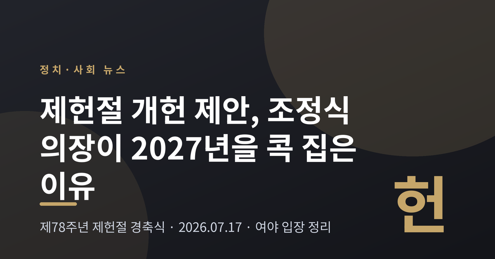
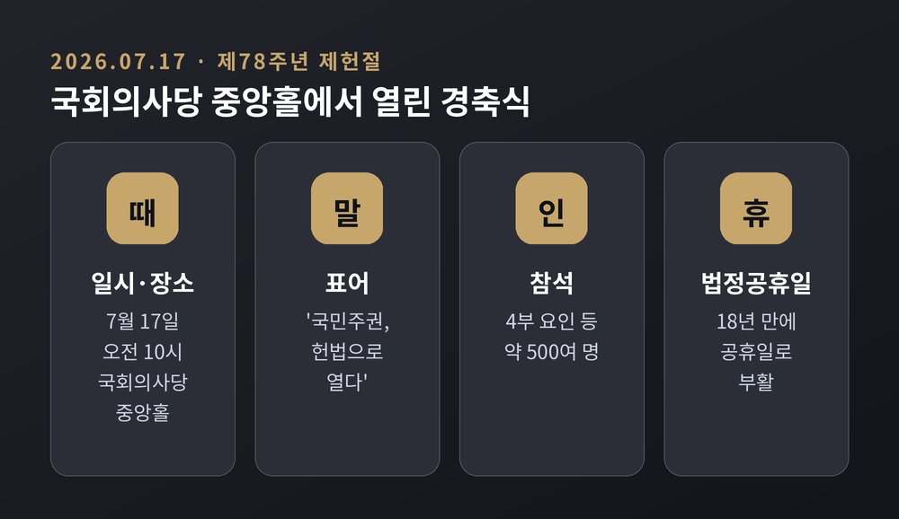
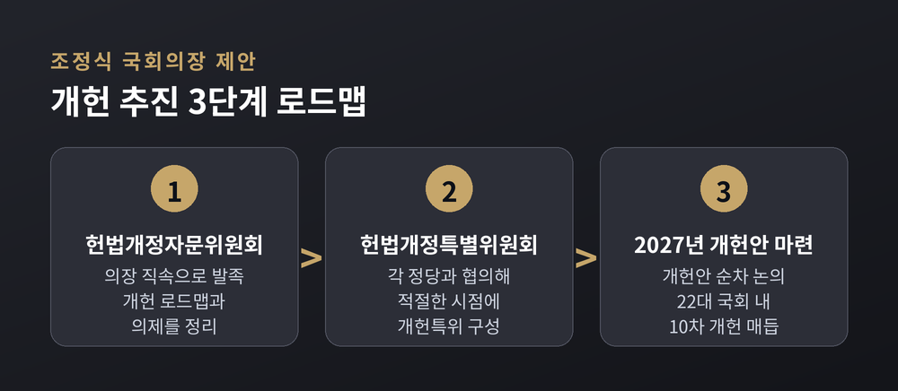
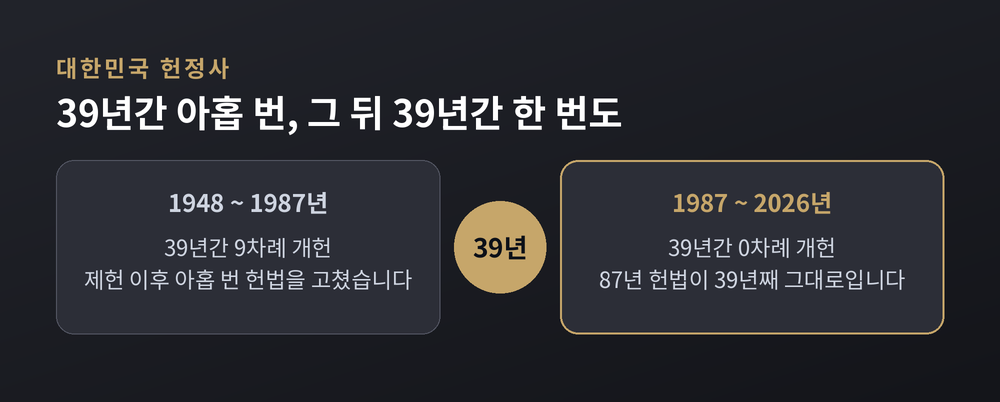
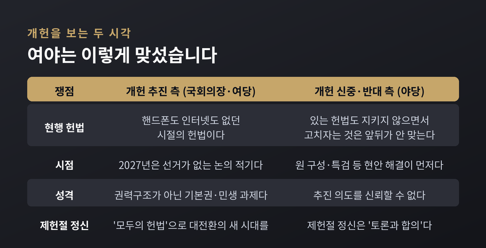
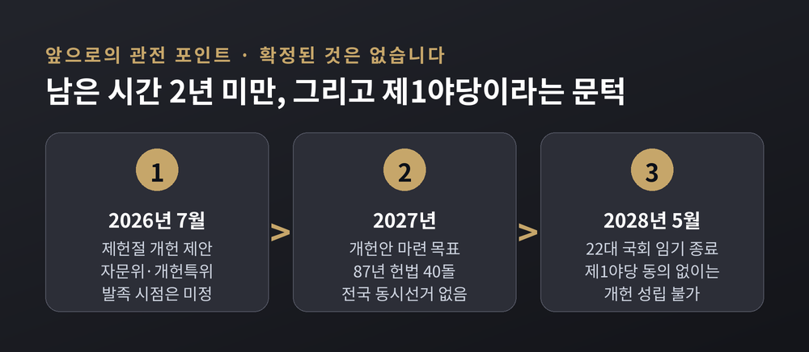

이번 글에서는 2026년 7월 17일 국회에서 열린 제78주년 제헌절 경축식과, 그 자리에서 나온 조정식 국회의장의 10차 개헌 제안을 정리해 보겠습니다. 개헌은 찬반이 첨예하게 갈리는 사안입니다. 그래서 여야 양측의 말을 가능한 한 그대로 옮기고, 판단은 독자께 맡기려 합니다.
세 줄 요약
경축식은 이날 오전 10시 국회의사당 중앙홀에서 열렸습니다.
표어는 '국민주권, 헌법으로 열다'였습니다. 조정식 국회의장과 조희대 대법원장, 김상환 헌법재판소장, 한성숙 국무총리 등 4부 요인이 자리했습니다. 김호철 감사원장과 전직 국회의장, 주한 외교사절단, 제헌국회의원유족회 등 500여 명이 참석했습니다.
올해 제헌절은 조금 특별했습니다. 18년 만에 법정공휴일로 부활했기 때문입니다.
조 의장은 사전환담에서 이렇게 말했습니다. "제헌절의 의미는 단순히 국경일이 돼 오늘 하루 쉬는 날이 아니라, 국민들께는 편안한 휴식일 수 있지만 저희에게는 헌정사와 대한민국 헌법 가치의 소중함을 다시 한번 느끼는 하루가 아닐까 생각한다."
식순도 눈여겨볼 만합니다. 인공지능 기술로 구현한 제헌국회의원 198인과 22대 국회 의원들이 제헌헌법 전문과 총강을 릴레이로 낭독한 뒤, 제헌헌법에 도장을 찍는 무대가 마련됐습니다. 우원식 전 국회의장은 민주주의 발전에 기여한 공로로 국민훈장 무궁화장을 받았습니다.

경축사의 핵심은 한 문장으로 압축됩니다.
"2027년에 국민주권 개헌안을 마련하고, 이번 22대 국회 내에 10차 개헌을 매듭지을 것을 제안한다."
시점을 못 박은 이유가 있습니다. 조 의장은 "내년은 전국 동시선거가 없는 해로 국회가 팔을 걷어붙이고 차분하게 개헌을 논의할 수 있는 적기"라고 설명했습니다. 여기에 하나를 더 붙였습니다. 내년은 1987년 헌법이 40돌을 맞는 해입니다.
절차도 구체적으로 제시했습니다. 세 단계입니다.
첫째, 의장 직속 헌법개정자문위원회를 발족해 개헌 로드맵과 의제를 정리합니다. 둘째, 각 정당과 협의해 적절한 시점에 국회 헌법개정특별위원회를 구성합니다. 셋째, 개헌안을 순차적으로 논의합니다.
여기에 국민이 직접 개헌안을 제안하고 토론할 수 있는 참여형 디지털 플랫폼 '모두의 헌법'(가칭)을 만들겠다고 약속했습니다.
방식은 '한 번에 전부'가 아닙니다. 조 의장은 "5·18 민주화운동 정신의 헌법 전문 수록과 대통령 계엄선포권 제한 등 합의 수준이 높은 과제부터 차근차근 물꼬를 트겠다"고 했습니다. 쉬운 것부터 먼저 처리하고 어려운 것은 뒤로 미루는, 이른바 단계적·연속적 개헌입니다.
이 밖에 언급한 의제로는 권력구조 개편, 선거관리 개혁, 실질적 삼권분립이 있습니다. 조 의장은 12월 3일을 '국민주권의 날'로 지정하겠다고 약속했고, 북측 최고인민회의 대표에게 남북국회회담 개최를 공식 제안하기도 했습니다.

조 의장이 개헌 필요성을 설명하며 든 논거는 '헌법 지체'였습니다.
"현행 87년 헌법은 핸드폰도, 인터넷도 없던 시절에 만들어졌다"고 그는 말했습니다. 기후 위기라는 단어 자체가 생소하던 시절이었다는 지적도 덧붙였습니다. 초고령 사회와 인구 소멸 위기 앞에서 국가의 책무를 뚜렷하게 명시하지 못하고 있다는 것입니다.
AI에 대한 언급도 나왔습니다. "인공지능 대전환 시대에 기술 혁신과 인간 존엄의 균형을 어떻게 잡을 것인지에 대한 통찰도 보이지 않는다."
주목할 점은 조 의장이 개헌을 권력구조 문제가 아니라 기본권 문제로 제시했다는 것입니다. 그가 든 사례는 세 가지였습니다.
이 구성은 행사 연출과도 맞물립니다. 이날 경축식에는 현행 헌법과 제도의 사각지대에서 기본권을 온전히 보장받지 못한 국민 5명이 초청됐습니다. 개헌이 정치권의 권력 다툼이 아니라 민생 과제라는 메시지를 전하려는 자리 배치였습니다.
숫자를 보면 이 논쟁의 구조가 선명해집니다.
정대철 대한민국헌정회장은 기념사에서 이렇게 말했습니다. "제헌 이후 39년간 9번의 헌법 개정이 이뤄졌지만, 87년 헌법은 39년간 계속되고 있다."
예전엔 39년 동안 아홉 번을 고쳤습니다. 지금은 39년 동안 한 번도 고치지 못했습니다.
같은 길이의 시간에 정반대의 일이 벌어진 셈입니다. 개헌을 주장하는 쪽은 이 비대칭을 '지체'라고 부릅니다. 뒤집어 보면, 87년 헌법이 그만큼 오래 버텨왔다는 뜻이기도 합니다. 같은 숫자를 두고 해석이 갈립니다.
정 회장은 구체적인 시간표도 제시했습니다. "여야 동수로 개헌특위를 구성"하자고 했고, "2028년 총선 때 개헌 국민투표를 동시에 실시하는 것이 최선"이라며 국회에 강력히 요청했습니다. 22대 국회의 임기는 2028년 5월까지입니다. 조 의장의 '22대 국회 내 매듭'과 정 회장의 '2028년 총선 국민투표'를 겹쳐 놓으면, 남은 시간은 2년이 채 되지 않습니다.
정 회장은 협치도 함께 당부했습니다. "여야 간의 토론과 협치를 복원해 국민에게 희망을 주는 정치로 크게 변화하기를 간절히 바란다."

이번 제안을 이해하려면 직전의 실패를 알아야 합니다.
2026년 4월, 우원식 당시 국회의장과 6개 정당 소속 의원들이 헌법 개정안 발의에 착수했습니다. 당시 개헌안에는 헌법 제명을 순한글 '대한민국 헌법'으로 바꾸는 안, 헌법 전문에 부마민주항쟁과 5·18 민주화운동 이념을 명시하는 안이 담겼습니다. 계엄에 대한 국회 통제를 강화하는 조항과 국가균형발전을 국가의 의무로 명문화하는 신설 조항도 포함됐습니다.
이 개헌안은 5월 국회 본회의에 상정됐습니다. 그리고 국민의힘이 표결에 불참하면서 통과되지 못하고 폐기됐습니다.
여기서 드러나는 사실이 하나 있습니다. 표결에 불참하는 것만으로 개헌안이 무산됐다는 것은, 개헌 의결에 일반 법안보다 훨씬 높은 문턱이 요구된다는 뜻입니다. 다시 말해 제1야당의 동의 없이는 개헌이 성립하지 않습니다. 여당의 의지가 아무리 강해도 혼자서는 넘을 수 없는 벽입니다.
조 의장의 이번 제안은 불과 두 달 전 같은 국회에서 좌초한 사안을 다시 꺼낸 것입니다. '합의 수준이 높은 과제부터'라는 단계적 접근, 국민참여 플랫폼, 자문위원회를 거치는 완만한 절차는 그 실패를 의식한 설계로 읽힙니다.
18년 만의 공휴일이었지만, 경축식은 온전하지 못했습니다.
장동혁 국민의힘 대표가 불참했습니다. 그는 이날 오후 잠실 올림픽공원 집회 현장을 찾아 장외 집회를 이어갔습니다.
불참 이유에 대해 장 대표는 전날 이렇게 밝혔습니다. "대화와 타협을 통해 국민의 뜻을 반영해야 할 국회에서 국회의장과 법사위원장을 모두 여당이 차지하고도 떳떳하게 제헌절 행사를 거행하겠다고 한다. 저는 내일 행사에는 참여하지 않겠다." 후반기 국회 원 구성 협상과 선관위 특검을 둘러싼 대치가 배경이었습니다.
집회 현장에서는 이렇게 말했습니다. "40일 넘게 제도권 정치가 아무것도 하지 않아서 이곳에 나오는 것."
다만 야당 지도부가 전원 불참하지는 않았습니다. 정점식 국민의힘 원내대표가 전날의 불참 방침에서 돌아서 참석했습니다. 국민의힘 관계자는 "대표가 못 가는데 원내대표까지 안 가는 건 국민들 보기에도 모양새가 안 좋다"며 "원 구성 문제와는 별개"라고 설명했습니다.
조 의장은 환담에서 "모두 함께해줘서 국회의장으로서 고맙다"고 사의를 표했습니다. 조 의장은 앞서 여야 원내대표에게 제헌절 전까지 원 구성 협상을 마무리해달라고 촉구해왔지만, 협상은 끝내 난항을 겪었습니다.
같은 날, 여야는 각자의 소셜미디어를 통해 정반대의 메시지를 냈습니다.
여당 — 한병도 더불어민주당 대표 직무대행 겸 원내대표
"국민주권 개헌 제안에 적극 공감하며 환영한다. 개헌특위를 즉각 구성하고 국민의 뜻을 모아가자. 국민의힘의 전향적인 동참을 기대한다."
야당 — 정점식 국민의힘 원내대표
"지금 민주당이 장악한 22대 국회는 야당에 대한 최소한의 존중도, 대화와 협상의 의지도 없다. (…) 제헌절은 야당을 향한 최후통첩의 알리바이가 아니다. 오늘 기려야 하는 것은 제헌절이라는 껍데기가 아니라 '토론과 합의'의 제헌절 정신이다."
정 원내대표는 표현의 자유와 삼권분립이 입법권으로 유린되고 있다는 점, 6·3 국민참정권 훼손 사태 진상규명을 위한 특검이 미적거리고 있다는 점을 함께 지적했습니다.
여기서 한 가지 짚어둘 것이 있습니다. 국민의힘의 반대는 '개헌 자체'에 대한 반대와는 결이 다릅니다. 앞서 5월 개헌안 표결 당시 장동혁 대표는 이렇게 말했습니다. "이재명과 이 정권은 지금껏 헌법을 개무시해왔고, 있는 헌법도 안 지키고 온갖 위헌 법률을 만들었다. 지키지도 않은 헌법을 뭐 하러 고치자는 건가." 그는 개헌을 하겠다면 먼저 대통령의 연임 불가 선언이 있어야 한다고 요구하기도 했습니다.
정리하면 야당의 논리는 '개헌이 나쁘다'가 아니라 '이 정권이 추진하는 개헌은 신뢰할 수 없다'에 가깝습니다. 반대로 여당과 의장 측은 87년 헌법의 노후화와 12·3 계엄의 경험이 개헌을 더는 미룰 수 없게 만들었다고 봅니다.
어느 쪽이 옳은지는 사실 확인으로 가려지는 문제가 아닙니다. 정치적 평가의 영역입니다. 이 글에서는 양쪽의 논거를 그대로 옮기는 데서 멈추겠습니다.

확정된 것은 아직 없습니다.
조 의장이 밝힌 것은 의지와 절차입니다. 헌법개정자문위원회를 언제 발족할지, 개헌특위를 어느 시점에 구성할지, '모두의 헌법' 플랫폼을 어떻게 운영할지는 구체적으로 공개되지 않았습니다. 국민의힘이 이 제안에 당론 차원에서 어떻게 답할지도 아직 확인되지 않았습니다.
변수는 두 가지로 좁혀집니다.
하나는 시간입니다. 22대 국회 임기는 2028년 5월까지입니다. 2027년에 개헌안의 뼈대를 완성하고 국민투표까지 가려면 일정이 빠듯합니다.
다른 하나는 문턱입니다. 5월의 경험이 보여주듯, 개헌은 제1야당이 표결에 들어오지 않으면 성립하지 않습니다. 그래서 조 의장이 꺼낸 '합의 수준이 높은 과제부터'라는 전략이 실효를 거둘지가 관건입니다. 다만 지금의 대치는 개헌 의제 자체보다 원 구성과 특검이라는 현안에 걸려 있습니다. 그 매듭이 풀리지 않으면 개헌 논의의 출발선에 서는 것부터 쉽지 않아 보입니다.
낙관할 근거가 많지는 않습니다. 두 달 전에 같은 국회가 같은 문제로 멈춰 섰기 때문입니다.

정리하면 이렇습니다.
2026년 제헌절에 국회는 두 장면을 동시에 보여줬습니다. 한쪽에서는 AI로 되살린 제헌국회의원 198인이 헌법을 낭독했습니다. 다른 한쪽에서는 제1야당 대표가 국회 밖에 있었습니다.
조 의장이 내건 이름은 '모두의 헌법'이었습니다. 그런데 그 제안이 나온 자리에 '모두'가 있지는 않았습니다.
헌법을 고치는 일보다 어려운 것은, 고치자는 이야기를 함께 나눌 자리를 만드는 일일지도 모릅니다.
2027년에 개헌안의 뼈대가 세워지겠냐고 물으신다면, 그 답은 헌법 조문이 아니라 국회 안의 대화에 달려 있다고 말씀드리겠습니다.
이 글의 사실관계는 2026년 7월 17일자 머니투데이·아주경제·뉴스핌·허프포스트코리아·파이낸셜뉴스·뉴스토마토 등의 보도에 근거했습니다. 인용문은 각 매체가 전한 발언을 옮긴 것입니다.